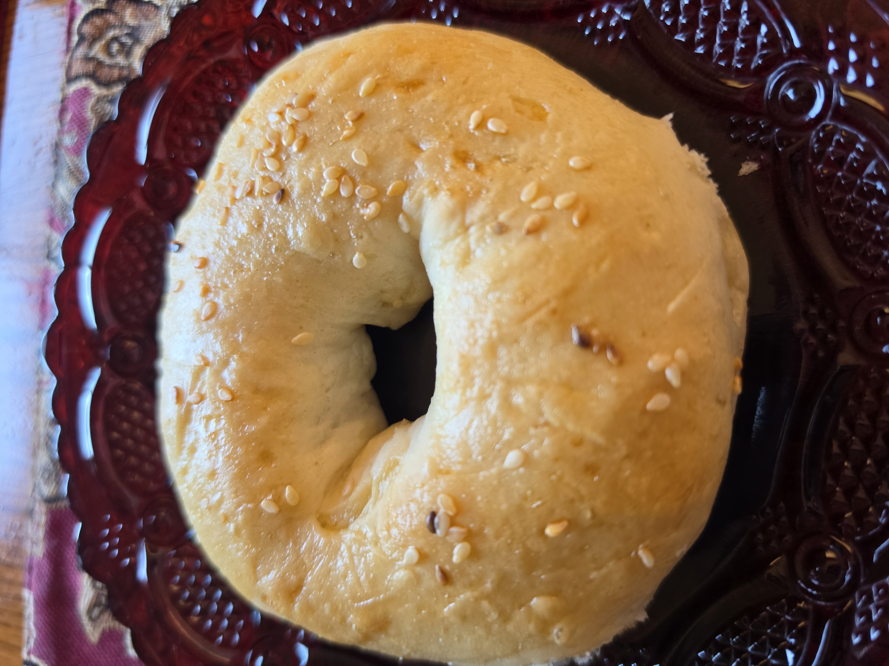

Hello internet today we will make some bagels
|
 |
Ingredients
|
InstructionsPrepare the dough: In the bowl of a stand mixer fitted with a dough hook attachment, whisk the warm water, barley malt syrup/sugar, and yeast together. Cover and allow to sit for 5 minutes. *If you don’t have a stand mixer, use a large mixing bowl and mix the dough with a wooden spoon or silicone spatula in the next step.* Add the flour and salt, and beat on medium speed for 2 minutes, until the dough comes together and pulls away from the sides of the bowl. If it seems too sticky and clings to the sides of the bowl instead of forming a rough mass around the dough hook or spoon, add more flour, 1 Tablespoon at a time, and continue to mix until the dough pulls away from the sides of the bowl. The dough should be stiff and somewhat dry. If it is crumbly and breaks off in pieces, add more water, 1 teaspoon at a time, mixing well after each addition. Knead the dough: When the dough has reached the proper consistency, beat on low speed with the dough hook for an additional 6–7 minutes, or knead by hand on a lightly floured surface for 6–7 minutes, until the dough feels smooth, supple, and elastic. (If you’re new to bread-making, my How to Knead Dough video tutorial can help here.) If the dough becomes too sticky during the kneading process, sprinkle 1 teaspoon of flour at a time on the dough or on the work surface/in the bowl to make a soft, slightly tacky dough. Do not add more flour than you need because you do not want a dry dough. After kneading, the dough should still feel a little soft. Poke it with your finger—if it slowly bounces back, your dough is ready to rise. You can also do a “windowpane test” to see if your dough has been kneaded long enough: tear off a small (roughly golfball-size) piece of dough and gently stretch it out until it’s thin enough for light to pass through it. Hold it up to a window or light. Does light pass through the stretched dough without the dough tearing first? If so, your dough has been kneaded long enough and is ready to rise. If not, keep kneading until it passes the windowpane test. Lightly grease a large bowl with nonstick spray, butter, or oil. Place the dough in the bowl, turning it to coat all sides in the oil. Cover the bowl with plastic wrap or a clean kitchen towel. Allow the dough to rise at room temperature for 1.5–2 hours, or until doubled in size. Line two large baking sheets with parchment paper or silicone baking mats. Shape the bagels: When the dough is risen, punch it down to release the air. On a lightly floured surface, divide the dough into 8 equal pieces, about 4 ounces (113g) each. Shape each piece into a ball. Press your index finger through the center of each ball to make a hole, then stretch and widen the hole to about 1.5–2 inches in diameter. Arrange the shaped bagels on the prepared baking sheets. Loosely cover the shaped bagels with a kitchen towel or plastic wrap and let them rest for 5–10 minutes as you prepare the water bath. Preheat the oven to 425°F (218°C). Water bath: Fill a large, wide pot with 2 quarts (1.9L) of water. Whisk in the barley malt syrup or honey. Bring to a boil over high heat, then reduce heat to medium-high. Drop 2 or 3 bagels in at a time, making sure they have enough room to float around. Boil the bagels for 1 minute, then use a spatula to flip each bagel over and boil for 1 minute more. Using a slotted metal spatula, lift the bagels out of the water, letting the excess water drain off. Place the bagels back on the lined baking sheets. Repeat with remaining bagels. Using a pastry brush, brush the egg wash on top and around the sides of each bagel. If you’re adding toppings, dip the tops of the bagels into the toppings immediately after applying the egg wash. Bake for 20–25 minutes, rotating the pans halfway through, until the bagels are dark golden brown. Allow the bagels to cool on the baking sheets for 20 minutes, then transfer to a cooling rack to cool completely. Slice, toast, top, enjoy however you want! Cover leftover bagels tightly and store at room temperature for up to 4 days or in the refrigerator for up to 1 week. |
|
Thank you for looking at my recipe!